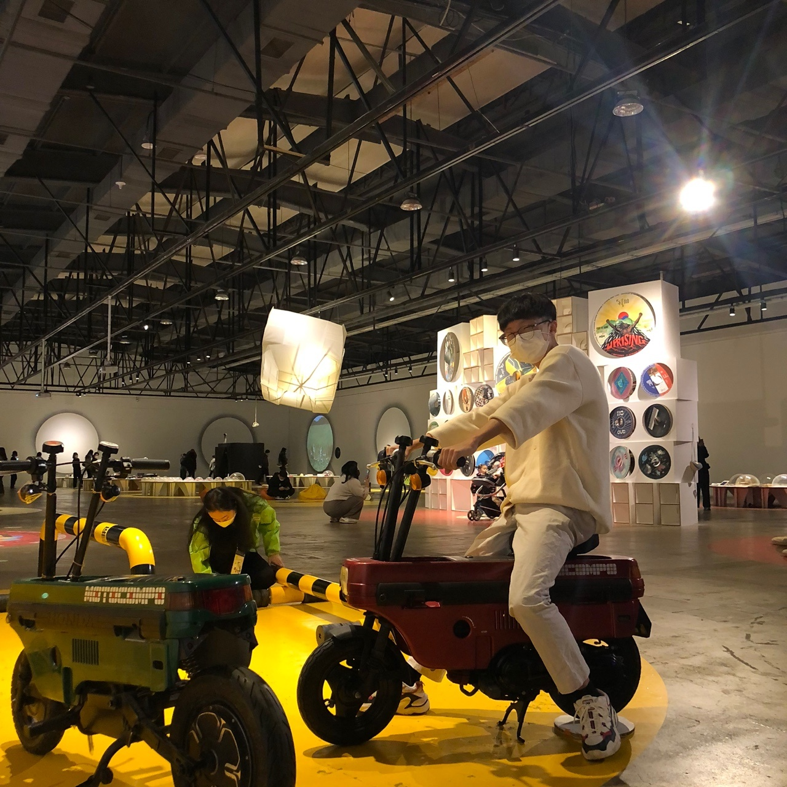

포기하지 않고 방법을
찾아내 끝까지 노력하는
정태환입니다.
- 01026625417
- kt26625417@gmail.com
- https://github.com/JeongTaehwan
- https://lumbar-dessert-399.notion.site/Front-End-Developer-85690d59cde44d278c9419ca2ee3d416
다양한 사람들과 소통하며 개발하는 것을 좋아합니다. 프론트엔드 엔지니어로서 백엔드, 디자이너와 소통을 해가며 제품을 만드는 것을 좋아하며 서로의 부분에서 피드백을 해주고 받는것을 원합니다.
주요 기술 3개
기술 태그
프로젝트
2021.07.10 ~ (개발 및 유지보수중)
2022.01.03 ~ 01.07 v1.0.0 베타서비스 완료
2022.01.10 ~ 개발 참여
2022.03.02 (정식 릴리즈 후 운영중)
Dotori 🐿
https://dotori-gsm.com/
전교생과 사감선생님까지 250명 가량이 이용하고 있는
서비스입니다. 2022년 1월부터 개발에 참여하여 2022년 3월
2일부터
정식 서비스 중에 있습니다.
-
Prettier를 전역으로 적용시켜
일관성있게 코드를 관리하도록 개발환경 개선 -
기상음악 기능에서 React-Calendar를 이용하여
기상음악을 신청된 날짜별로 조회 할 수 있게 개발 - 레거시를 인지하고 필요없는 코드를 청산하여 깔끔하게 관리
-
기상음악 기능을 사감선생님과 학생들의
요구 사항 및 피드백에 맞춰 수정 및 유지보수 - 기상음악을 조회할 때 UI상 중복되어 보이는 날짜가 많아 UI 개선
- Recoil, StyleProps을 이용, 달력을 제외한 다른 부분을 클릭하면 달력 모달이 꺼지게 개발하여 사용자 경험 개선
-
MVP 단위 개발 프로세스를 참고하여
일주일 간격으로 재배포하며 사감 선생님과
학생들의 피드백을 받아 서비스에 반영하여
더욱 사용자 친화적이고 완성도 높은 서비스를 위해
지속적인 수정, 유지보수를 해 나가고 있습니다.
v1.0.0 정식 릴리즈 이후
- 팀 구성 ― Front End 개발을 맡음, BE 3명 FE 3명
- https://github.com/Team-Ampersand/Dotori-client
2022.01.10 ~ (개발 진행중)
PUZZLE 🧩
https://puzzle-frame.me/
학교 내부 프로젝트 구인구직 사이트입니다.
서비스의
기획, 설계부터 참여하여 배포까지 소프트웨어 생명주기를
모두 경험해본 서비스입니다.
-
Storybook을 활용한 디자인 시스템을 구축하여
컴포넌트 구조화 및 Style을 더욱 편리하게 관리 - Yarn berry를 도입하여 개발환경 개선
-
SWR를 도입하여 API요청에 대한 함수를 더욱
좋은 설계로
재사용할 수 있게 설계하여 개발 -
React-remark를 이용하여
마크다운 에디터로
게시글을 작성할 수 있게 개발 -
마크다운 Tool bar를 커스텀하여 게시글
작성에
더욱 편하게 활용할 수 있도록 개발 - 기능에 적합한 Custom Hook을 직접 개발하여 컴포넌트를 제작
-
게시물 Paging API를 무한스크롤 방식으로
연동하여
Pagination 기능 구현
- 팀 구성 ― Front End 개발을 맡음, BE 2명 FE 3명
- https://github.com/Frame-in-Puzzle/Puzzle-Front
2021.12 ~ 2022.01
땡겨!! 🏃🏻
학교 내 스포츠 구인구직 서비스
- Oauth를 이용하여 전반적인 회원시스템을 연동
- Next.js를 활용한 SSR 환경을 구축
- 팀 구성 ― Front end 개발을 맡음, FE 2명 BE 2명
- https://github.com/Ohapzizon/Ohapzizon-Client
2021.12 ~ 2022.01
GSM 대나무숲 🎋
광주소프트웨어마이스터고등학교 대나무숲
- 반응형 웹을 구현해 사용자의 편의와 경험 개선
- 기존의 사용자들이 불편함을 느끼던 태그 선택 기능에서 사용자들의 요구에 맞게 태그 선택 모달이 바로 꺼지게 변경
- 팀 구성 ― Front end 개발을 맡음, FE 3명 BE 2명
- https://github.com/joog-lim/bamboo-front
학력
2020-01
광주송정중학교
2020-03 ~ ing
광주소프트웨어마이스터고
중학교 3학년 때부터 프로그래밍에 관심을 보여 고등학교를 선택하게 되었고, 결국엔 웹 프론트엔드 개발자를 꿈꾸며 현재 취업 준비를 하고 있습니다.